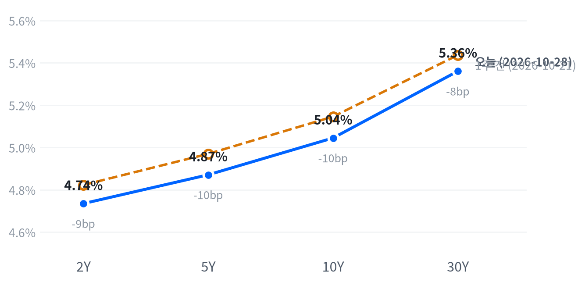

연준이 금리를 동결하면서도 인상을 주장한 반대 두 표와 「정보가 더 쌓이면 정책을 정한다」는 성명으로 12월 여지를 남겼다. 2년물은 제자리였고 장기물 금리만 올라 커브가 가팔라졌으며, 지수는 소폭 올랐고 하루의 차이는 버티브·마이크론 같은 AI 공급망 실적주가 만들었다.
장기물 상승이 인플레 보상인지 실질금리인지에 따라 장기 할인율에 민감한 성장 업종의 판단이 달라진다. 장 마감 뒤 알파벳 실적 부진과 마이크로소프트의 설비투자 하회가 나와, AI 공급망의 강세가 다음 세션에도 이어지는지가 먼저 확인할 일이다.
연준은 금리를 동결했지만 12월 인상의 문을 닫지 않았다. 인상을 주장한 반대가 두 표 나왔고, 성명은 9월의 「오늘의 정책 결정이 목표 복귀를 앞당긴다」는 문장을 「정보가 더 쌓이면 적절한 정책 기조를 정한다」로 바꿨다. CNN이 전한 CME FedWatch 기준 12월 인상 확률은 85%로 전일보다 올랐는데, 2년물은 제자리였고 장기물만 올라 2년물과 10년물의 금리차가 5.4bp 넓어졌다.
우리는 12월 인상이 이미 앞쪽 금리에 반영돼 있었고, 연준이 대응을 다음 지표로 미루자 물가 위험이 장기물에 붙었다고 본다. FRED의 기대인플레가 이날 3bp 올라 이 해석을 받치지만, 같은 날 명목·실질금리가 아직 나오지 않아 10년물 상승 가운데 인플레 보상의 몫은 확인되지 않았다. 가장 강한 반론은 의장이 말한 성장 강화와 AI 기업의 차입 확대가 실질금리와 기간프리미엄을 밀어 올렸다는 것이다. 장기물 상승의 구성에 대한 시장 기대를 잰 지표는 없어, 기대와 우리 해석의 차이는 알 수 없다.
이 구분은 3개월 시계의 업종 판단에 직접 닿는다. 인플레 보상이 장기물 상승을 이끈다면 장기 할인율에 민감한 소프트웨어·반도체 같은 성장 업종의 상대 강세는 금리 쪽 역풍을 맞는다. 실질금리와 성장 기대가 이끈다면 산업재·금융 같은 경기민감 업종에 우호적인 해석이 된다. 해외주식 중심 운용에서는 물가연동채나 명목 국채보다 업종 선택의 재료로 쓰고, FOMC만으로는 새 아이디어를 내지 않는다. 더 가까운 변수는 장 마감 뒤에 나왔다. 알파벳이 시간외에서 크게 밀리고 마이크로소프트의 분기 설비투자가 예상을 밑돌았다는 보도가 나와, 이날 버티브·마이크론이 끌어올린 반도체·AI 공급망의 상대 강세가 10월 29일 정규장에서 유지되는지를 먼저 확인한다.
확인 기준은 FRED의 같은 날짜 정렬 값이다. 10월 28일 대비 11월 5일의 10년 명목금리 변화 N과 10년 기대인플레 변화 B를 잰다. N이 +5bp 이상이고 B가 0.5×N 이상이면 인플레 보상 해석을 뒷받침하고, N이 +5bp 이상이고 B가 0.25×N 이하이면 이 해석은 약해져 실질금리·기간프리미엄 설명을 우선으로 본다. 그 밖이면 결론을 내지 않는다. 첫 자료는 10월 29일 08:30(ET) 9월 PCE와 3분기 GDP이고, 11월 6일 10월 고용이 이어진다.
| 지수 | 종가 | 등락 | 기준일 |
|---|---|---|---|
| 닛케이225 | 63,268.37 | +1.73% | 10월 27일 |
| 항셍 | 23,041.32 | -0.73% | 10월 27일 |
| 상해종합 | 3,648.30 | -1.33% | 10월 27일 |
| DAX | 25,704.02 | +0.44% | 10월 28일 |
| FTSE100 | 10,694.50 | +0.07% | 10월 28일 |
| 유로스톡스50 | 6,167.81 | +0.05% | 10월 28일 |
| VIX | 16.91 | -0.61p | 10월 28일 |
아시아 세 지수는 들어온 마지막 종가인 10월 27일 값이고, 유럽 세 지수와 VIX는 10월 28일 값이다. VIX 등락은 포인트다.
아시아는 미국과 엇갈렸고, 지역 안에서도 갈렸다. 10월 27일 종가로 아시아 세 지수는 평균 0.11% 내렸는데, 닛케이가 1.73% 오르는 사이 항셍(-0.73%)과 상해종합(-1.33%)은 내렸다. 유럽은 10월 28일 세 지수가 모두 올라 평균 0.19%로 미국 상승을 이었고, DAX가 0.44%로 가장 강했다.
야간 선물은 좁은 범위에서 움직였다. S&P 선물(ES)은 전날 22:00(ET) 7,752가 저점, 08:30(ET) 7,778이 고점으로 하루 범위가 0.34%였다. 나스닥 선물(NQ)은 04:00(ET) 29,989가 고점이었다. 그사이 서울에서 SK하이닉스 실적이 나왔고, 개장 전에는 버티브와 GE 버노바가 3분기 실적을 냈다. 현물은 S&P +0.17%, 나스닥 +0.22%, 러셀2000 +0.04%의 갭으로 상승 출발했다.
S&P는 하루 범위의 중간쯤에서, 나스닥과 러셀2000은 고점권에서 끝났다. 오후 FOMC 전후로 흔들린 뒤에도 매도 압력이 마감까지 이어지지 않았다는 뜻이다.
저점권·고점권 경계는 최근 2,256거래일의 일간 종가 위치 이력으로 다시 잰 기준이다.
업종 순서는 FOMC보다 실적이 정했다. 기술(+0.80%)이 가장 많이 올랐고 유틸리티(-0.84%)와 부동산(-0.73%)이 가장 많이 내렸다. 성장주가 0.67% 오르는 동안 가치주는 제자리였다. 14:00(ET) 성명과 이어진 기자회견은 지수를 장중에 흔들었지만 종가의 방향을 바꾸지는 못했다. 장 마감 뒤에는 알파벳이 실적 부진으로 시간외에서 약 10% 밀렸고, 마이크로소프트의 분기 설비투자가 예상을 밑돌자 코어위브·네비우스가 약 5% 내렸다는 보도가 나왔다.
출처: CNBC
| 지수 | 종가 | 등락률 |
|---|---|---|
| S&P500 성장주 | 140.18 | +0.67% |
| 러셀2000 | 2,830.51 | +0.41% |
| S&P500 | 7,743.98 | +0.28% |
| 나스닥 | 26,549.85 | +0.27% |
| 다우존스 | 52,475.10 | +0.19% |
| S&P500 가치주 | 239.23 | 0.00% |
| 섹터 | 등락률 |
|---|---|
| 기술 | +0.80% |
| 금융 | +0.45% |
| 에너지 | +0.35% |
| 산업재 | +0.34% |
| 헬스케어 | +0.30% |
| 소재 | +0.15% |
| 경기소비재 | -0.10% |
| 필수소비재 | -0.36% |
| 커뮤니케이션서비스 | -0.42% |
| 부동산 | -0.73% |
| 유틸리티 | -0.84% |
FOMC 결정과 실적 사이에서 S&P500은 0.28% 오른 7,744로 끝났다. 최근 2년(504거래일) 가운데 이보다 높았던 날이 18일뿐인 자리다. 나스닥은 0.27% 오른 26,550, 러셀2000은 0.41% 오른 2,831, 다우는 0.19% 오른 52,475다. 세 지수 모두 평소 하루 움직임의 절반에도 못 미쳤다.
S&P는 개장 직후가 그날 저점이었고(시가 7,736 대비 -0.22%), 오후 들어 성명과 기자회견을 지나며 고점을 만들었다. 기자회견 중 얻은 상승분 대부분을 장 후반에 내줬다는 보도가 나왔지만, 마감 무렵 다시 올라 종가로는 소폭 상승을 지켰다.
지수 상승은 거의 전부 기술 업종이 만들었다. 지수 상승폭 0.28% 가운데 추정 기여도로 기술이 +0.27%p를 보탰고, 금융이 +0.05%p를 더했다. 커뮤니케이션서비스는 -0.05%p로 상승폭을 가장 많이 깎았다. 업종 합으로 설명되지 않는 부분은 +0.02%p다.
추정 기여도는 업종 비중을 직접 받지 않아, 최근 252거래일 지수·업종 수익률로 추정한 비중을 곱한 값이다. 소재와 부동산은 비중을 추정할 수 없어 빠졌다.
이 상승은 넓은 위험선호보다 실적이 나온 업종에 한정된 매수로 본다. 기술 한 업종이 지수 상승을 거의 다 설명하고, 성장주가 오르는 동안 가치주는 움직이지 않았다. 금리가 오른 날 유틸리티와 부동산이 가장 약했지만, 최근 60거래일 동안 주식과 금리는 거의 따로 움직여 장기물 상승을 지수의 부담으로 연결할 근거는 약하다. VIX는 0.61p 내린 16.91로 높지도 낮지도 않은 수준이다.
출처: Capital Brief, FXEmpire
| 만기 | 종가(10월 28일) | 전일比(bp) | 1주 전(10월 21일) | 주간 변화(bp) |
|---|---|---|---|---|
| 2Y | 4.735% | -0.2 | 4.823% | -8.8 |
| 5Y | 4.871% | +3.1 | 4.970% | -9.9 |
| 10Y | 5.045% | +5.2 | 5.146% | -10.1 |
| 30Y | 5.361% | +5.6 | 5.437% | -7.6 |
FOMC 동결 뒤 장기물만 올랐다. 10년물은 5.2bp 오른 5.045%, 30년물은 5.6bp 오른 5.361%로 끝났고, 2년물은 4.735%로 0.2bp 내려 사실상 제자리였다. 10년물은 최근 2년(504거래일) 가운데 이보다 높았던 날이 21일뿐인 고점권에 있고, 이날 움직임은 평소 하루만큼이었다.

네이버 국채 종가, 전 만기 10월 28일 기준. 1주 전(10월 21일)과 비교하면 2년물 8.8bp, 10년물 10.1bp, 30년물 7.6bp 내려 전 만기가 내렸다. 10년물 하루 변화는 평소 하루 변화폭의 1.04배였다.
하루로는 단기물이 제자리이고 장기물이 오른 베어 스티프닝이다. 2s10s는 31.0bp로 전일 25.6bp에서 5.4bp 넓어졌고, 5s30s는 49.0bp다. 한 주로 보면 전 만기가 내린 가운데 10년물이 2년물보다 조금 더 내려 2s10s 기준으로는 소폭 불 플래트닝이다. 지난주 장기물 하락으로 좁아진 커브가 FOMC 당일 상당 부분 되돌려졌다.
장기물을 밀어 올린 것은 연준이 대응을 미룬 방식이라고 본다. 12월 인상 확률은 회의 뒤 더 올랐지만, 회의 전 선물로 이미 82%가 반영돼 있었다는 보도가 있어 2년물이 움직일 여지는 작았다. 반면 성명이 다음 행동을 「더 쌓일 정보」에 걸자, 커브가 가팔라진 것은 물가가 목표로 빨리 돌아온다는 확신이 약하다는 뜻이라는 해설이 나왔다. 반대 방향으로 회의 축소 발표를 비둘기파로 읽어 장중 2년물이 내렸다는 해석도 나왔다.
장기물 상승의 내역은 아직 나눌 수 없다. FRED 10년 기대인플레는 10월 28일 3bp 올라 2.38%, 5년 기대인플레는 4bp 올라 2.49%였지만, 같은 날 명목·실질금리는 게시되지 않았다. 명목을 실질과 기대인플레로 나눈 최신 자료는 10월 27일 것으로, 그날 10년물은 1bp 내렸고 그 가운데 실질금리가 -2bp, 기대인플레가 +1bp였다. 5거래일 하락 13bp는 전부 실질금리 몫이었다. 지난주 랠리는 실질금리가 이끌었고, FOMC 당일 반등에서는 기대인플레가 먼저 움직였다는 점까지가 지금 말할 수 있는 범위다.
신용시장은 조용했다. 하이일드 스프레드는 10월 27일 3.18%로 하루 12bp 좁아졌고, 기간프리미엄 추정치는 10월 23일 0.94%다.
5년 뒤 5년 명목금리 5.16%, 실질 2.91%(10월 27일 기준). 기대인플레 쪽 수치와의 교차검증은 할 수 없었고, 위험 프리미엄이 섞인 값이다.
출처: investingLive, Asia Business Daily
| 통화쌍 | 종가 | 등락률 | 기준일 |
|---|---|---|---|
| DXY | 102.120 | -0.17% | 10월 28일 |
| USD/KRW | 1,341.63 | +1.17% | 10월 28일 |
| USD/JPY | 157.924 | +0.01% | 10월 28일 |
| EUR/USD | 1.1158 | +0.17% | 10월 28일 |
달러는 FOMC 뒤 소폭 약해졌다. 달러지수는 0.17% 내린 102.120, 유로/달러는 0.17% 오른 1.1158이다. 엔/달러는 157.924엔으로 거의 움직이지 않았다. 크게 움직인 것은 원화 하나였다.
원/달러는 1.17% 올라 1,342원이 됐다. 평소 하루 움직임의 2배로, 이날 주요 통화 가운데 유일하게 크게 움직였다. 서울 증시는 SK하이닉스 실적에 6.63% 급등했다는 보도가 나왔는데, 원화는 그 주식 강세와 반대로 약해졌다. 서울 오전 11시 20분에 이미 1,336원으로 전일보다 약 9원 높았다는 보도가 있지만, 원화 약세의 원인을 설명한 보도는 찾지 못했다. 달러지수가 내린 날이라 달러 전반의 강세로는 설명되지 않는다. 표의 값은 뉴욕 16:00 기준이라 서울 마감과 시점이 다르고, 수준으로는 최근 2년(504거래일) 가운데 이보다 낮았던 날이 16일뿐인 원화 강세권에 아직 있다.
달러 약세는 금리차보다 회견 해석에 가까웠다. 2년물이 종가로 제자리여서 단기 금리차는 달러를 움직이지 않았다. 엔/달러는 기자회견이 시작된 14:30(ET) 봉에서 158.35엔으로 고점을 찍은 뒤 되밀렸고, 회의 횟수 축소 발표를 비둘기파로 읽어 2년물과 달러가 장중에 내렸다는 보도가 나왔다. 일간 종가만으로는 이 해석이 달러 하락을 얼마나 설명하는지 나눌 수 없다.
환율은 뉴욕 16:00 ET 가격, 전 거래일 같은 시각 대비다. 원/달러는 평소 하루 변화폭의 2.0배 움직였다.
출처: CNBC, Korea Times, Asia Business Daily
| 품목 | 종가 | 등락률 |
|---|---|---|
| WTI | $101.74 | +1.53% |
| Brent | $110.51 | +0.60% |
| 천연가스 | $3.024 | -1.37% |
| 금 | $4,089.10 | +0.35% |
중동 긴장 보도에 유가가 다시 올랐다. WTI는 1.53% 오른 101.74달러, 브렌트는 0.60% 오른 110.51달러다.
WTI는 정오 무렵 103.55달러까지 올랐다가 상승폭의 절반가량을 내주고 마감했다. 미국이 걸프 국가들에 중간선거 뒤 이란 재공습에 대비하라고 전했다는 보도와, 후티 반군이 사우디 라스타누라 정유시설에 미사일을 쐈다고 주장했다는 보도가 그 시간대에 나왔다. 공급 차질 위험에 붙는 웃돈이 다시 커진 하루로 본다. WTI가 브렌트보다 더 올라 두 유종의 가격 차는 8.77달러로 전일(9.64달러)보다 좁아졌다. 표의 WTI는 12월물, 브렌트는 1월물이라 가격 차에는 만기 차이도 들어 있다.
금은 0.35% 오른 4,089달러로 움직임은 미미했다. 기자회견이 시작된 14:30(ET) 봉이 그날 저점이었고 마감 직전에 고점을 찍어, 회견 뒤 올랐다. 12월 큰 폭 인상 기대가 식어 금이 올랐다는 해석이 나왔지만, 최근 몇 달 금과 금리는 거의 따로 움직여 실질금리로 금을 설명하기는 어렵다. 천연가스는 1.37% 내린 3.024달러다.
최근 60거래일 동안 열 개 자산의 움직임 가운데 가장 큰 공통 요인은 전체의 41.4%를 설명하고, 여전히 주식이 이끈다. 이 요인과 함께 움직이는 자산군은 직전 60거래일 구간의 금리에서 원자재로 바뀐 상태가 이어진다.
원자재·환율은 뉴욕 16:00 ET 가격, 전 거래일 같은 시각 대비다. 결제가와 다를 수 있다.
출처: CNBC, FXStreet
미국 경기 국면은 성장 보합·물가 교착인 교착을 10월 14일부터 11영업일째 유지한다. 이날은 새 경제지표가 없었고, 성장 점수 0.046과 물가 점수 -0.028은 어느 쪽으로도 기울 만큼이 아니다. FOMC 성명이 경제활동 표현을 「견조한」에서 「강한」 속도로 올렸지만, 국면은 10월 29일 3분기 GDP·9월 PCE와 11월 6일 10월 고용에서 다시 점검한다.
| 지표 | Actual | Forecast | Previous | 발표일 | 컨센 대비 | 직전 대비 | 추세 |
|---|---|---|---|---|---|---|---|
| 구인건수(8월) | 7,079K | — | 7,335K | 2026-08 기준월 | 악화 | 악화(미미) · 3개월 평균 7,336K → 7,199K | |
| 신규 실업수당 청구 | 194,000 | — | 200,000 | 2026-10-22 (10월 17일 주간) | 개선 | 개선(미미) · 4주 평균 202K → 198K | |
| 신규 청구 4주 평균 | 197,750 | — | 198,750 | 2026-10-22 (10월 17일 주간) | 개선 | 개선(완만) · 4주 평균 205K → 199K | |
| 계속 실업수당 청구 | 1,728,000 | — | 1,703,000 | 2026-10-22 (10월 10일 주간) | 악화 | 개선(뚜렷) · 4주 평균 1,742K → 1,711K | |
| 비농업 고용 변화(9월) | +29K | — | +133K | 2026-09 기준월 | 악화 | 악화(미미) · 3개월 평균 +81K → +51K | |
| 실업률(9월) | 4.2% | — | 4.1% | 2026-09 기준월 | 악화 | 개선(미미) · 3개월 평균 4.27% → 4.13% | |
| 평균시간당임금 MoM(9월) | +0.13% | — | +0.32% | 2026-09 기준월 | 악화 | 악화(미미) · 3개월 평균 +0.21% → +0.19% |
| 지표 | Actual | Forecast | Previous | 발표일 | 컨센 대비 | 직전 대비 | 추세 |
|---|---|---|---|---|---|---|---|
| 산업생산 MoM(9월) | +0.66% | — | +0.06% | 2026-09 기준월 | 개선 | 보합 · 3개월 평균 +0.40% → +0.32% | |
| 내구재주문 MoM(9월) | +1.84% | — | +0.12% | 2026-10-27 (9월분) | 개선 | 악화(미미) · 3개월 평균 +1.70% → +0.95% | |
| 신규주택판매(9월) | 676K | — | 680K | 2026-10-27 (9월분) | 악화 | 개선(미미) · 3개월 평균 652K → 668K | |
| 기존주택판매(9월) | 399만 | — | 393만 | 2026-09 기준월 | 개선 | 악화(뚜렷) · 3개월 평균 4,120K → 3,993K | |
| 실질GDP QoQ 연율(2분기) | +2.2% | — | +2.5% | 2026년 2분기 기준 | 악화 | — | |
| S&P Global 종합 PMI(10월 속보) | 57.6 | — | 58.4 | 2026-10-23 | — | — | |
| S&P Global 제조업 PMI(10월 속보) | 56.0 | 55.5 | 55.9 | 2026-10-23 | 상회▲ | — | — |
| S&P Global 서비스업 PMI(10월 속보) | 57.9 | 58.0 | 58.8 | 2026-10-23 | 하회▼ | — | — |
| 지표 | Actual | Forecast | Previous | 발표일 | 컨센 대비 | 직전 대비 | 추세 |
|---|---|---|---|---|---|---|---|
| 소매판매 MoM(9월) | +0.77% | — | +1.29% | 2026-09 기준월 | 악화 | 보합 · 3개월 평균 +0.61% → +0.55% | |
| 미시간대 소비자심리(9월 확정) | 48.1 | — | 51.7 | 2026-09 기준월 | 악화 | 개선(완만) · 3개월 평균 48.0 → 51.7 |
| 지표 | Actual | Forecast | Previous | 발표일 | 컨센 대비 | 직전 대비 | 추세 |
|---|---|---|---|---|---|---|---|
| CPI YoY(9월) | 3.72% | — | 3.35% | 2026-09 기준월 | 상승 | 둔화(미미) · 3개월 평균 3.80% → 3.46% | |
| CPI MoM(9월) | +0.65% | — | +0.40% | 2026-09 기준월 | 상승 | 재가속(완만) · 3개월 평균 +0.23% → +0.37% | |
| Core CPI YoY(9월) | 2.57% | — | 2.45% | 2026-09 기준월 | 상승 | 둔화(미미) · 3개월 평균 2.71% → 2.49% | |
| Core CPI MoM(9월) | +0.33% | — | +0.29% | 2026-09 기준월 | 상승 | 재가속(완만) · 3개월 평균 +0.19% → +0.28% | |
| PPI 최종수요 MoM(9월) | +1.34% | — | +0.47% | 2026-09 기준월 | 상승 | 재가속(완만) · 3개월 평균 +0.49% → +0.66% | |
| PCE 물가 YoY(8월) | 3.42% | — | 3.36% | 2026-08 기준월 | 상승 | 둔화(미미) · 3개월 평균 3.59% → 3.41% | |
| Core PCE YoY(8월) | 3.01% | — | 2.98% | 2026-08 기준월 | 상승 | 둔화(미미) · 3개월 평균 3.12% → 3.01% | |
| 미시간대 1년 기대인플레(9월 확정) | 4.6% | — | 4.0% | 2026-09 기준월 | 상승 | 둔화(완만) · 3개월 평균 4.70% → 4.27% |
직전 대비는 Actual을 Previous와 비교한 것이고, 추세는 최근 3개월 평균을 그 앞 3개월 평균과 비교한 것입니다(주간 실업수당 청구는 4주 평균끼리). 추세의 세기는 그 지표가 평소 움직이는 폭에 견준 크기이고, 작은 변화는 보합으로 봅니다. 분기 지표인 GDP는 두 비교가 같은 숫자를 보므로 직전 대비만 싣습니다.
연준의 다음 금리 변경은 12월 9일 FOMC의 추가 인상이라는 판단을 유지한다. 이날 FOMC는 동결하면서 인상을 주장한 반대 두 표를 남겼고, 성명은 정보가 더 쌓이면 정책 기조를 정하겠다고 적어 12월 여지를 닫지 않았다. CNN은 CME FedWatch 기준 12월 인상 확률이 전일 78%에서 85%로 올랐다고 전했다. 확률 변화가 7%p에 그쳐 시점 판단은 바꾸지 않는다.
12월 9일 FOMC 전까지 연준 성명이나 의장 발언이 추가 인상 여지를 닫으면 12월 인상 중심 판단을 수정한다. 11월 6일 10월 고용에서 실업률이 3월 이후 범위(4.1~4.3%) 위로 올라서면 인상 우위 판단을 철회한다.
자산별 전달경로는 전일과 같다.
출처: CNN, Admiral Markets
연준은 10월 28일 FOMC에서 정책금리 목표 범위를 3.75~4% 그대로 두었다. 표결은 10대2였고, 쿡 이사와 해맥 클리블랜드 연은 총재가 이번 회의에서 인상해야 한다며 반대했다. 9월 인상 뒤 첫 회의에서 동결을 택했지만, 성명은 물가가 여전히 높다는 문장을 그대로 두고 다음 행동을 앞으로 들어올 정보에 걸었다. 워시 의장은 기자회견에서 2027년부터 한 회의를 금리 결정 없는 전략 논의에 쓰겠다는 일정 변경도 발표했다.
Inflation remains elevated. The accumulation of more information will help the Committee determine the policy stance appropriate to ensure a timely return of inflation to the Committee's 2 percent goal.
물가는 여전히 높다. 더 많은 정보가 쌓이면 위원회가 물가를 2% 목표로 제때 되돌리는 데 적절한 정책 기조를 정하는 데 도움이 될 것이다.
출처: 10월 FOMC 성명 전문 · 연준
The information we receive over the coming period will help us determine where we want policy to be.
앞으로 들어오는 정보가 정책을 어디에 두고 싶은지 정하는 데 도움이 될 것이다.
출처: 10월 FOMC 기자회견 개회사 · 연준
So as we widen the frame to survey the broad economic and financial picture, real activity is clearly pointing in the right direction. That’s good news. But inflation is too high.
시야를 넓혀 경제와 금융의 큰 그림을 살펴보면 실물 활동은 분명히 옳은 방향을 가리키고 있다. 좋은 소식이다. 그러나 물가는 너무 높다.
출처: 10월 FOMC 기자회견 개회사 · 연준
And while overall financial conditions are tighter, I’m unwilling and unable to call them tight.
전반적인 금융 여건이 더 조여지긴 했지만, 그것을 긴축적이라고 부를 생각도 없고 그렇게 부를 수도 없다.
출처: 10월 FOMC 기자회견 개회사 · 연준
네 발언을 이으면 동결의 성격이 드러난다. 의장은 실물 경기를 좋게 보고 물가를 높게 보며, 금융 여건이 긴축적이라고 부를 수준은 아니라고 했다. 금리를 내릴 이유는 하나도 꺼내지 않았고, 올릴지 말지는 다음 지표에 맡겼다. 9월 성명이 인상의 효과를 말했다면 10월 성명은 판단을 미뤘다는 점이 다르다. 인상을 주장한 반대가 두 표 나온 것까지 더하면, 이 동결은 12월 인상 여지를 닫은 결정이 아니라고 본다.
| 항목 | 9월 16일 성명 | 10월 28일 성명 |
|---|---|---|
| 결정 | The Committee decided to raise the target range for the federal funds rate by 1/4 percentage point to 3-3/4 to 4 percent, in support of the Federal Reserve's dual mandate. | The Committee decided to maintain the target range for the federal funds rate at 3-3/4 to 4 percent, in support of the Federal Reserve's dual mandate. |
| 경기 | Economic activity is expanding at a solid pace. | Economic activity is expanding at a strong pace. |
| 정책 문장 | Today's policy action will support a timelier return to the Committee's 2 percent goal. | The accumulation of more information will help the Committee determine the policy stance appropriate to ensure a timely return of inflation to the Committee's 2 percent goal. |
성명에서 바뀐 것은 세 군데다. 결정이 인상에서 유지로, 경기 표현이 「견조한」에서 「강한」 속도로 바뀌었고, 인상의 효과를 말하던 문장이 정보를 더 보겠다는 문장으로 대체됐다. 나머지 여섯 문장은 그대로다.
시장은 성명과 회견에 따라 장중에 흔들렸다. 성명이 나온 14:00(ET) 봉에서 나스닥은 시가 대비 0.45% 내려 그날 저점을 찍었고, 기자회견이 시작된 14:30(ET) 봉에서 시가 대비 0.19% 높은 고점을 만들었다. S&P도 같은 봉에서 시가 대비 0.30% 높은 고점을 찍었다. 같은 시각 금은 그날 저점을 찍은 뒤 마감 직전까지 시가 대비 0.83% 높은 고점으로 올랐다.
이 회의만으로는 새 투자 아이디어를 내지 않는다. 의장이 다음 행동을 앞으로 들어올 정보에 걸었기 때문에, 판단의 재료는 회의 자체보다 10월 29일 9월 PCE·3분기 GDP와 11월 6일 10월 고용이다. 장기물이 이 발언에 어떻게 반응했는지는 전략 코멘트의 확인 기준으로 잰다.
| 지수 | 순위(5거래일 전) | 1개월 | 3개월 | SPY 대비 3개월 | 대비 변화 | 12-1 모멘텀 | 변동성 | 1일 VaR 95% | 베타 | 50/200일선 | 52주 고점 대비 |
|---|---|---|---|---|---|---|---|---|---|---|---|
| 소프트웨어 IGV | 1(1) | +6.4% | +19.9% | +15.6%p | -4.4%p | -10.1% | 32.2% | 2.6% | 1.84 | 위/위 | -4.1% |
| 에너지 XLE | 2(2) | +11.2% | +16.8% | +12.4%p | +1.9%p | +43.4% | 21.7% | 2.0% | -0.70 | 위/위 | -1.7% |
| 초대형주 Top 50 XLG | 4(6) | 0.0% | +5.9% | +1.5%p | +0.1%p | +7.4% | 11.5% | 0.9% | 1.18 | 위/위 | -2.3% |
| 반도체·AI 하드웨어 SMH | 6(15) | -6.5% | +5.3% | +0.9%p | +10.0%p | +69.1% | 33.6% | 4.0% | 2.34 | 아래/위 | -15.1% |
| 경기소비재 XLY | 7(5) | +5.7% | +2.8% | -1.6%p | -3.0%p | -8.7% | 15.4% | 1.6% | 1.15 | 위/위 | -6.8% |
| 모멘텀 팩터 MTUM | 11(16) | -4.2% | +1.8% | -2.6%p | +6.8%p | +23.7% | 21.4% | 2.6% | 1.46 | 아래/위 | -11.9% |
| 금속·광업 XME | 13(13) | -2.5% | -0.5% | -4.9%p | +1.9%p | +6.6% | 34.5% | 3.7% | 2.00 | 아래/아래 | -23.6% |
| 금융 XLF | 15(10) | +3.9% | -1.2% | -5.6%p | -1.3%p | +2.9% | 12.3% | 1.3% | 0.50 | 위/위 | -3.8% |
| 소형주 IWM | 16(18) | +0.8% | -3.6% | -8.0%p | +2.1%p | +12.6% | 12.9% | 1.4% | 0.98 | 아래/위 | -7.6% |
| 전력망 GRID | 18(17) | -5.0% | -3.9% | -8.3%p | +1.7%p | +13.9% | 23.1% | 2.7% | 1.58 | 아래/아래 | -14.7% |
| 소형 성장 IWO | 20(20) | -0.3% | -4.5% | -8.9%p | +2.3%p | +7.6% | 16.7% | 2.0% | 1.33 | 아래/아래 | -9.9% |
| 은행 KBE | 21(19) | +2.8% | -5.0% | -9.4%p | +1.6%p | +13.2% | 14.9% | 1.4% | 0.33 | 아래/위 | -7.9% |
| 산업재 XLI | 22(22) | -0.4% | -5.3% | -9.7%p | +2.5%p | +9.8% | 12.8% | 1.4% | 0.81 | 아래/아래 | -9.4% |
| 주택건설 XHB | 23(24) | +1.0% | -5.7% | -10.1%p | +4.8%p | -9.9% | 23.9% | 2.3% | 0.94 | 아래/아래 | -18.5% |
| 방산 ITA | 25(25) | -0.8% | -12.7% | -17.1%p | +1.5%p | -4.2% | 16.8% | 2.1% | 0.62 | 아래/아래 | -17.9% |
| 지수 | 순위(5거래일 전) | 1개월 | 3개월 | SPY 대비 3개월 | 대비 변화 | 12-1 모멘텀 | 변동성 | 1일 VaR 95% | 베타 | 50/200일선 | 52주 고점 대비 |
|---|---|---|---|---|---|---|---|---|---|---|---|
| 헬스케어 XLV | 3(3) | +5.3% | +10.3% | +5.9%p | -0.3%p | +18.6% | 17.1% | 1.4% | 0.21 | 위/위 | -0.9% |
| 배당 SCHD | 5(4) | +6.8% | +5.9% | +1.5%p | -0.1%p | +25.4% | 11.1% | 0.9% | 0.07 | 위/위 | -0.9% |
| 필수소비재 XLP | 8(7) | +6.1% | +2.3% | -2.1%p | -2.5%p | +6.2% | 15.6% | 1.4% | -0.24 | 위/위 | -3.5% |
| 퀄리티 팩터 QUAL | 9(9) | -0.1% | +2.1% | -2.2%p | -2.1%p | +13.1% | 8.0% | 0.8% | 0.75 | 위/위 | -2.0% |
| 저변동성 SPLV | 14(14) | +5.7% | -1.1% | -5.5%p | +1.3%p | +0.1% | 10.1% | 1.0% | 0.02 | 위/위 | -3.2% |
| 유틸리티 XLU | 19(23) | +7.0% | -4.2% | -8.6%p | +4.8%p | -10.9% | 15.7% | 1.4% | 0.21 | 위/아래 | -9.1% |
| 지수 | 순위(5거래일 전) | 1개월 | 3개월 | SPY 대비 3개월 | 대비 변화 | 12-1 모멘텀 | 변동성 | 1일 VaR 95% | 베타 | 50/200일선 | 52주 고점 대비 |
|---|---|---|---|---|---|---|---|---|---|---|---|
| 일본 EWJ | 10(8) | -1.6% | +1.8% | -2.6%p | -2.6%p | +20.5% | 15.7% | 1.3% | 1.20 | 아래/위 | -4.4% |
| 신흥국 EEM | 12(12) | -5.8% | -0.1% | -4.5%p | +2.1%p | +23.4% | 20.1% | 2.2% | 1.48 | 아래/아래 | -10.8% |
| 유럽 VGK | 17(11) | -0.6% | -3.8% | -8.2%p | -3.2%p | +10.8% | 11.0% | 1.2% | 0.75 | 아래/위 | -6.1% |
| 중국 MCHI | 24(21) | -5.9% | -11.6% | -16.0%p | -4.8%p | -19.1% | 15.5% | 1.8% | 0.72 | 아래/아래 | -23.7% |
| 지수 | 순위(5거래일 전) | 1개월 | 3개월 | SPY 대비 3개월 | 대비 변화 | 12-1 모멘텀 | 변동성 | 1일 VaR 95% | 베타 | 50/200일선 | 52주 고점 대비 |
|---|---|---|---|---|---|---|---|---|---|---|---|
| S&P 500 SPY | – | +1.1% | +4.4% | 0.0%p | – | +12.7% | 9.3% | 0.8% | 1.00 | 위/위 | -0.9% |
| S&P 500 동일가중 RSP | – | +3.8% | +1.3% | -3.1%p | – | +10.8% | 9.4% | 0.8% | 0.64 | 위/위 | -2.0% |
| 나스닥 100 QQQ | – | -1.7% | +6.3% | +1.9%p | – | +18.0% | 16.2% | 1.7% | 1.55 | 위/위 | -4.5% |
가격 기준 시장 국면은 횡보이고, 10월 22일 강세에서 넘어온 뒤 5거래일째다. 이날 판정은 2거래일 연속 강세로 나왔고, 강세 판정이 하루 더 이어지면 국면은 강세로 돌아간다. SPY는 772.31로 50일선(766.83) 위에 있고, 52주 고점과의 거리는 0.87%다.
5거래일 전과 비교하면 반도체·AI 하드웨어 업종의 3개월 상대수익률이 가장 크게 개선됐다. 순위는 15위에서 6위로 올랐고, SPY 대비 3개월 상대수익률은 9.99%p 늘어 +0.95%p로 플러스가 됐다. 이날은 SK하이닉스 실적에 마이크론이 오르며 이 흐름을 이었지만, 장 마감 뒤 나온 하이퍼스케일러 실적이 다음 세션의 재료다. 1위 소프트웨어는 순위를 지켰지만 상대수익률이 4.4%p 줄어든 +15.55%p다. 전력망은 18위로 한 계단 내려섰지만 상대수익률은 1.68%p 개선된 -8.29%p로, 버티브 급등과 GE 버노바 하락이 같은 날 나왔다.
위험 지표는 위험선호 쪽으로 기운다. 하이일드 스프레드는 10월 27일 3.18%로 5거래일 사이 15bp 좁아졌고, 10년물 실질금리는 같은 기간 13bp 내렸다. 둘 다 FOMC 당일 장기물 반등 전의 값이다. VIX는 16.9로 높지도 낮지도 않다. 순유동성은 4주 사이 조금 늘었지만 금융여건지수가 조금 조여져 유동성 방향은 중립이다.
마이크론(+5.86%)이 반도체·AI 하드웨어 관련주의 강세를 이끌었다. SK하이닉스가 3분기 영업이익이 7배 넘게 늘었다고 발표하자 함께 올랐다는 보도가 나왔다. SK하이닉스는 D램·HBM 물량이 2029년까지 사실상 다 팔렸다고 밝혔다.
샌디스크(+7.66%)는 메모리주 동반 상승 속에 가장 크게 올랐다. 같은 날 SK하이닉스는 낸드 평균판매가격이 20%대 중반 올랐다고 밝혔지만, 업종 동반 상승 밖의 확인된 재료 없음.
엔비디아(-1.17%)는 같은 반도체 안에서 메모리와 반대로 움직였다. 개장 직후가 그날 고점이었고 마감 직전까지 밀렸다. 허깅페이스 인수에 법무부가 조사에 나섰다는 보도는 장 마감 무렵에 나왔다. 장중 하락에는 확인된 재료 없음.
알파벳(+1.60%)은 장 마감 뒤 실적 발표를 앞두고 올라 커뮤니케이션서비스의 낙폭을 줄였다. 장 마감 뒤 주당순이익이 2.12달러로 예상(3.02달러)을 밑돌고 3분기 잉여현금흐름이 -90.7억 달러로 나와 시간외에서 약 10% 밀렸다는 보도가 나왔다. 정규장 상승에는 확인된 재료 없음.
애플(-0.94%)은 지수를 끌어내린 대형주였다. 확인된 재료 없음.
움직인 종목 목록 밖에서는 전력 장비가 가장 크게 움직였고, 전력망 투자 테마 안에서 결과가 엇갈렸다. 버티브는 3분기 실적과 함께 연간 가이던스를 전 항목 올려 16.48% 급등했다. 유기적 수주가 100% 넘게 늘었다는 보도가 나왔다. GE 버노바는 실적이 예상을 웃돌았는데도 1.90% 내렸다. 올해 풍력 부문 손실 전망을 넓혔고 90억 달러 규모 트렌치 인수를 현금과 차입으로 절반씩 치르기로 한 점이 부담이 됐다는 보도가 나왔다. 수주와 가격 재료는 오르고 비용과 조달 재료는 내린 하루다.
출처: Reuters, CNBC, Investing.com, Yahoo Finance, Motley Fool, Benzinga, 24/7 Wall St
FOMC 뒤 장기물 상승을 인플레 보상 확대로 보는 판단(10월 28일)은 FRED 같은 날짜 정렬 값으로 잰다. 10월 28일 대비 11월 5일의 10년 명목금리 변화 N과 10년 기대인플레 변화 B를 잰다. N이 +5bp 이상이고 B가 0.5×N 이상이면 이 판단을 뒷받침하고, N이 +5bp 이상이고 B가 0.25×N 이하이면 판단은 약해져 실질금리·기간프리미엄 설명을 우선으로 본다. N이 +5bp에 못 미치거나 B가 그 사이에 있거나, 두 날짜 가운데 하나의 FRED 값이 없으면 결론을 내지 않는다. 출발점의 기대인플레는 2.38%이고, 10월 28일 명목·실질금리는 아직 게시되지 않았다. 이날 10년물 5.2bp 상승은 이미 지나간 움직임이라 측정에 넣지 않는다.
연준이 동결하면서도 12월 인상 여지를 닫지 않아 2년물이 오른다는 판단(10월 23일)은 결론 없이 닫는다. 연준은 여지를 닫지 않았고 12월 인상 확률도 올랐지만, 네이버 2년물은 4.735%로 출발점(10월 27일 4.737%)보다 0.2bp 낮아 미리 정한 ±5bp 범위 안에 머물렀다. 연준이 인상하지 않았고 WTI도 5% 넘게 움직이지 않아 예외 조건은 해당하지 않는다. 정책 확률과 2년물 종가가 같은 날 다르게 움직인 이유가 회의 전 선반영인지, 회의 축소 발표를 비둘기파로 읽은 해석인지는 일간 종가로 구분되지 않는다.
단기물이 12월 인상을 반영해 커브가 평탄해졌다는 판단(10월 21일)은 방향은 지지됐지만 메커니즘은 확인하지 못한 채 닫는다. 2년물과 10년물의 금리차는 31.0bp로 지지 기준(32.3bp 이하) 안에 있고, 12월 인상 확률 80% 이상이라는 전제도 CNN이 전한 85%로 충족됐다. 그러나 기준 안에 든 것은 10월 21일부터 27일까지 쌓인 평탄화 덕분이다. FOMC 당일만 보면 커브는 장기물 주도로 5.4bp 가팔라져, 정책금리 기대가 평탄화를 이끈다는 설명과 반대로 움직였다.
연준 인상 사이클과 AI 자본지출 랠리가 따로 간다는 판단(9월 22일)은 기한인 10월 28일 14:00(ET) FOMC에서 결론 없이 닫는다. 확인하려면 실질금리가 오르고 금리 민감 업종이 약한 날이 필요했다. 이날 유틸리티·부동산은 약했지만 10월 28일 실질금리는 기한까지 나오지 않았다.
하이퍼스케일러의 설비투자 상향이 공급망 매출 가시성으로 넘어간다는 판단(10월 26일)은 10월 29일 정규장에서 확인하고, 기준은 그대로다. 마이크로소프트·알파벳 가운데 한 곳 이상이 설비투자 전망을 올리고 내린 곳이 없을 때, 그날 AI 인프라 다섯 종목 단순평균과 S&P의 일간 등락률 차이가 +2.84%p 이상이면 뒷받침하고 -2.84%p 이하이면 약해진다. 알파벳은 올해 설비투자 가이던스를 유지했고 마이크로소프트가 전망을 올렸는지는 확인하지 못해, 전제가 채워지지 않아 결론을 내지 못할 가능성이 크다. 이날 다섯 종목은 S&P보다 4.73%p 강했지만 버티브·GE 버노바 실적이 만든 차이라 측정 대상이 아니다.
공급망 주가가 정책금리 경로보다 고객사 자금 조달과 수요 가시성에 먼저 반응한다는 판단(10월 27일)은 첫 세션을 재지 못했다. 2년물이 0.2bp 내려 5bp 이상 오른 세션이 아니었고, 네 종목 가운데 버티브가 실적을 냈다. 측정은 11월 6일 16:00(ET)까지 이어지고, 코히런트 실적일인 11월 4일은 뺀다.
어떤 판단도 실행한 포지션이 없어 성과는 잴 수 없다. 다음 확인은 10월 29일 08:30(ET) 9월 PCE와 3분기 GDP, 그리고 같은 날 AI 공급망의 정규장 반응이다.
시세는 Yahoo Finance와 네이버 국채 종가, 경제지표는 FRED와 각 발표 기관(BLS·BEA·Census 등), 그 밖의 내용은 본문에 밝힌 출처에서 가져왔다. 이 보고서는 투자 자문이 아니며 특정 자산의 매수·매도를 권유하지 않는다. 투자 판단과 그 결과에 대한 책임은 전적으로 투자자 본인에게 있다.